A mountain community nestled in the foothills of Mount Kanlaon, where waterfalls, cool mountain air, lush forests and local culture come together.
Barangay Ara-al is one of the communities of La Carlota City, Negros Occidental, situated toward the foothills of Mount Kanlaon.
The area is known for its mountain environment, agricultural communities, waterfalls and nature destinations.
One of its most recognized areas is Sitio Guintubdan, a popular mountain destination and jump-off area for visitors exploring nearby natural attractions.
Discover waterfalls, mountain landscapes and natural destinations around Ara-al and Guintubdan.
Experience the cool mountain atmosphere and natural scenery of Sitio Guintubdan.
Discover one of the waterfalls found within the mountain landscape of Ara-al.
Enjoy a refreshing nature destination surrounded by lush vegetation.
Explore another scenic waterfall destination within the community.
A beautiful natural attraction surrounded by the green landscape of the mountains.
Discover the natural beauty and peaceful atmosphere of Ara-al's upland areas.
Discover local dishes, agricultural products and food experiences from Ara-al and the surrounding communities of La Carlota City.
Enjoy home-cooked dishes and traditional Filipino favorites prepared by local families and food sellers.
Discover fresh fruits, vegetables and agricultural products grown in Ara-al and its upland communities.
Taste locally made snacks, native delicacies, sweets and other specialties from Ara-al and La Carlota City.
Discover community celebrations, cultural traditions and events in Ara-al and La Carlota City.
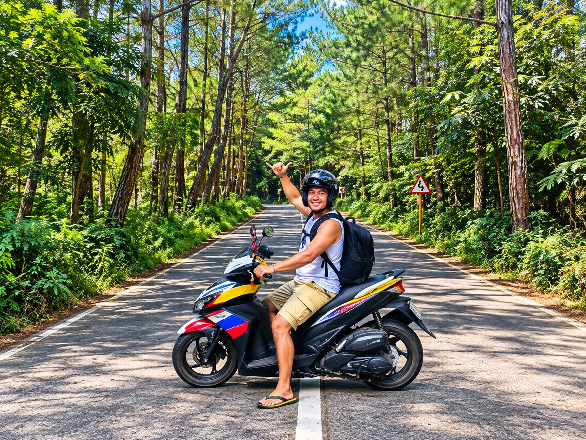
Communities in Ara-al and Guintubdan take part in local celebrations shaped by faith, agriculture, family and community traditions.
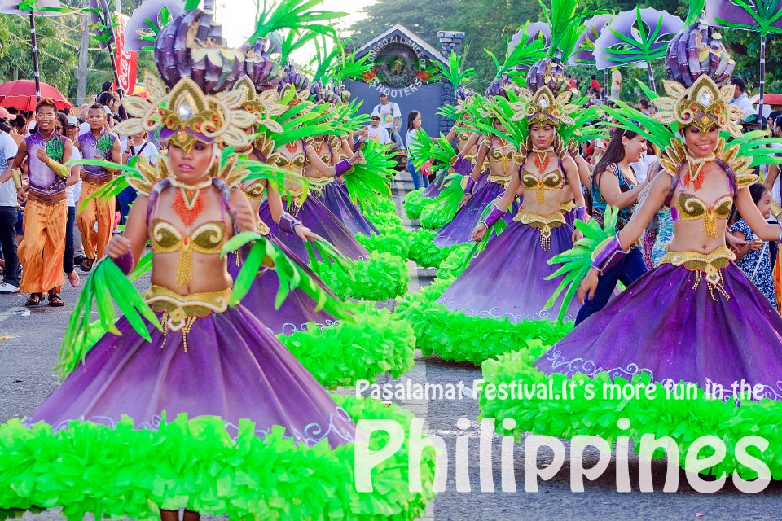
La Carlota City's Pasalamat Festival brings together colorful street dancing, cultural performances, costumes, music and community celebrations.
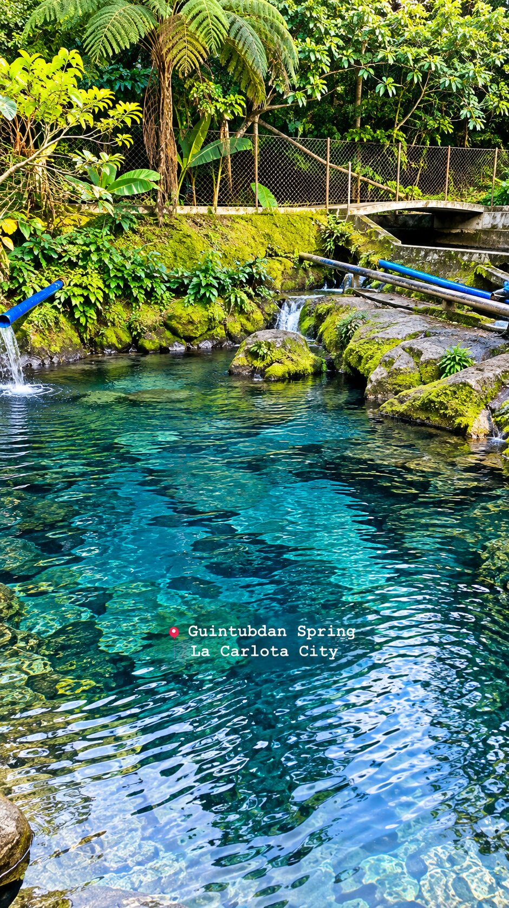
Community gatherings throughout the year bring residents together through food, music, traditions and shared celebrations.
Barangay Ara-al and the mountain community of Guintubdan have experienced eruptions, ashfall, evacuations and periods of volcanic unrest from Mount Kanlaon.
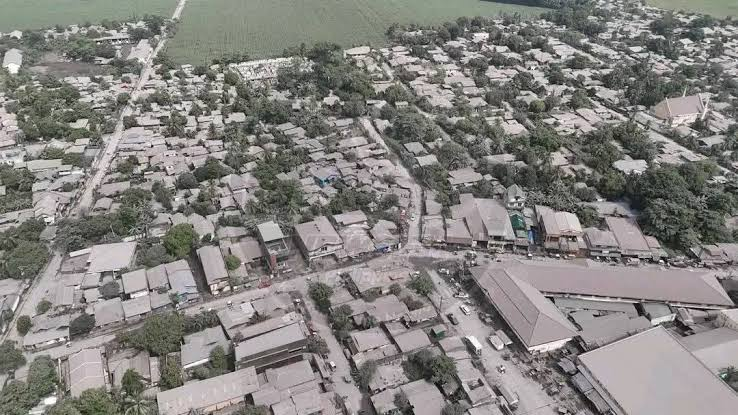
During periods of heightened activity from Kanlaon, volcanic ash has affected homes, roads, vegetation, farms and parts of the mountain landscape surrounding Guintubdan.
On June 3, 2024, Kanlaon Volcano produced an explosive eruption that sent a large volcanic plume above the summit. Communities surrounding the volcano experienced the effects of the eruption and ashfall.
Another explosive eruption and continuing volcanic activity brought ashfall to communities near Kanlaon, including areas around Guintubdan and La Carlota City.
Kanlaon erupted again on April 8, 2025. The explosive event generated a large volcanic plume, with ashfall reported in Barangay Ara-al and other nearby communities.
Continued volcanic unrest, ash emissions and explosive activity have remained part of life for communities surrounding Kanlaon.
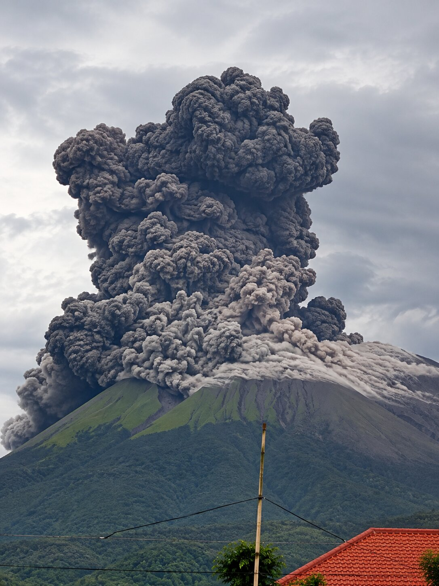
Ash-covered homes, vegetation and roads show how closely the people of Guintubdan live with one of the Philippines' active volcanoes.
Support local businesses by discovering shops, restaurants, local products, guides, transportation and other services in Ara-al and nearby La Carlota City.
Located at the corner of Yunque and Rizal Streets, this cozy café gallery offers Asian and Filipino meals, coffee and signature mango shakes.
Located across the public plaza, Café Norma is a relaxing local spot for coffee, pastries and casual dining.
A popular stop for pasalubong and native delicacies including puto, kutsinta, tikoy and crispy ukoy.
A longtime La Carlota food destination on Yunque Street, known for batchoy and crunchy empanadas.
A local dining destination offering seafood dishes and Filipino favorites.
A local café and casual dining spot in La Carlota City.
A local café offering food, drinks and a casual dining experience.
A local cafeteria offering meals and refreshments.
Find local Guintubdan guides for trekking, nature trips and exploring the area's attractions.
Ara-al's upland areas produce locally grown durian and other agricultural products.
Local farmers grow highland vegetables, root crops and seasonal fruits.
Traditional unrefined cane sugar reflecting Negros Occidental's sugarcane heritage.
Popular Negros delicacies enjoyed as snacks and commonly brought home as pasalubong.
A traditional sticky rice delicacy made with glutinous rice, coconut milk and sugar.
Get around Ara-al and nearby areas by local tricycles and jeepneys.
Discover local shops, products and services offered by entrepreneurs in Barangay Ara-al.
Find local repair, event, rental and other useful community services in Ara-al.
Stay close to nature and experience the peaceful mountain atmosphere of Guintubdan and Barangay Ara-al.
A mountain retreat in Sitio Guintubdan surrounded by lush greenery, cool air and natural attractions.
Check with local residents and tourism contacts for available homestay options in the Guintubdan area.
Explore other resorts, inns and accommodations in La Carlota City and nearby areas.
Discover Ara-al through moments captured across its mountains, waterfalls, scenic landscapes and vibrant local community.
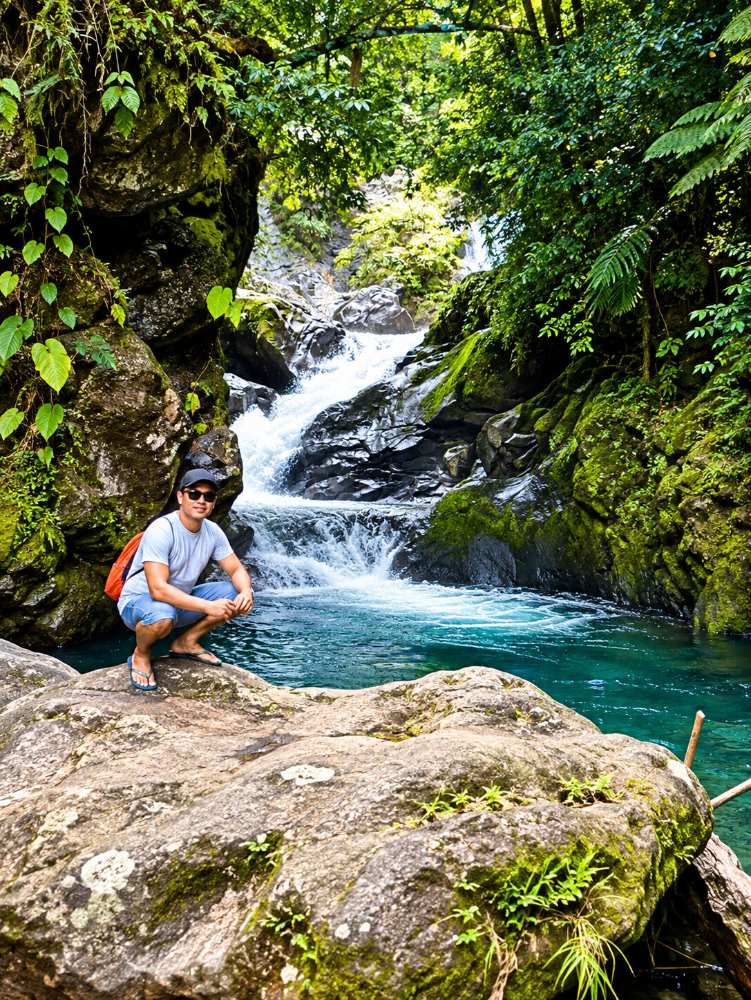
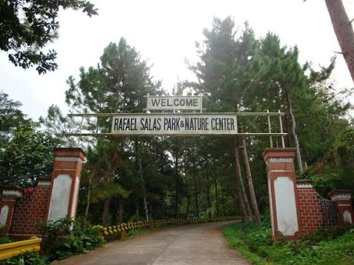
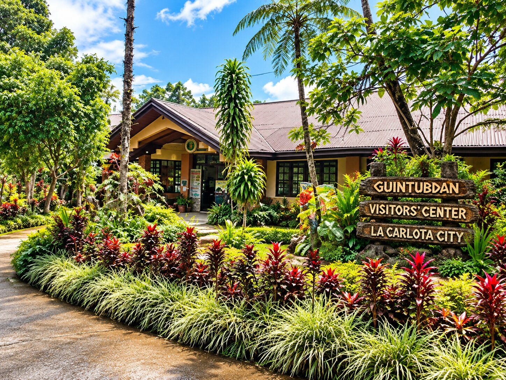
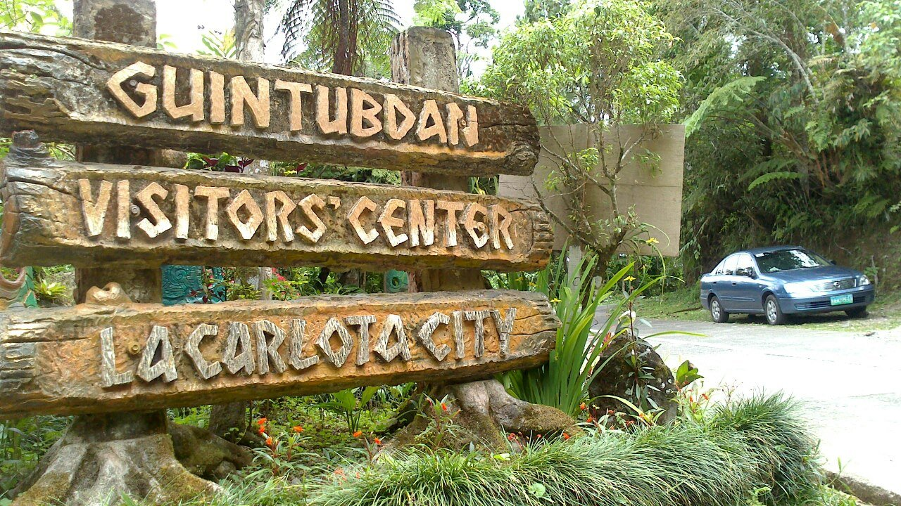
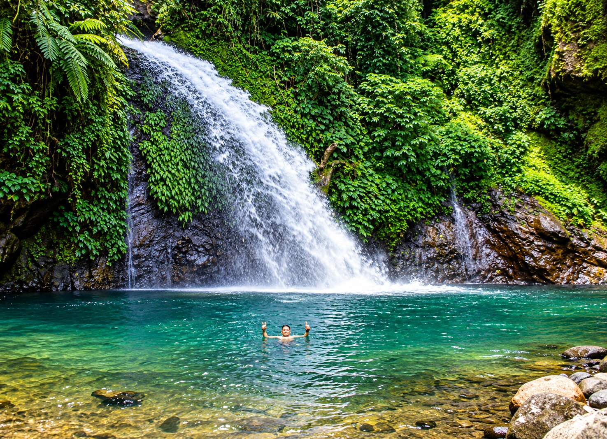
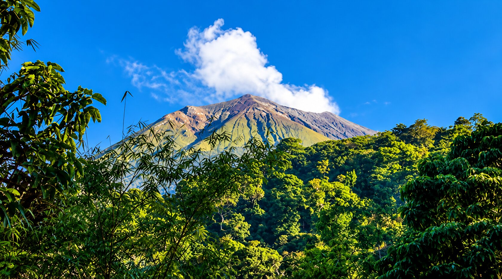
Barangay Ara-al is located in La Carlota City, Negros Occidental, Philippines.
Explore Ara-al, Sitio Guintubdan and nearby mountain destinations in La Carlota City.
Open in Google Maps